地政学
テルアビブはイスラエルの外交、軍事、経済情報が集まる海岸都市です。首都機能はエルサレムに偏りますが、大使館、報道、企業、空港、港湾が近く、中東と欧米を結ぶ窓口になります。紛争の緊張も暮らしに届きます。

🇮🇱 イスラエル / 西アジア / World City Atlas
地中海の浜辺、白い近代建築、ハイテク産業、港湾、移民の記憶、世俗的な夜の文化が重なるイスラエル最大の都市圏。エルサレムとは違う国家の顔を示す都市です。
都市の骨格
テルアビブは地中海沿いの浜辺、歴史港ヤッファ、白い近代建築、鉄道と高速道路、郊外の研究拠点を結びます。国家政治の中心ではなく、経済、文化、世俗的生活の中心として動きます。
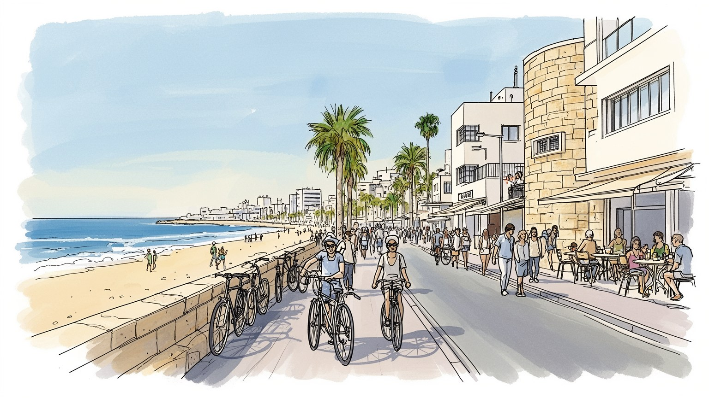
テルアビブはイスラエルの外交、軍事、経済情報が集まる海岸都市です。首都機能はエルサレムに偏りますが、大使館、報道、企業、空港、港湾が近く、中東と欧米を結ぶ窓口になります。紛争の緊張も暮らしに届きます。
ハイテク企業、金融、大学、医療、港湾、観光、飲食が都市圏を支えます。高賃金の開発職と清掃、介護、配送、警備、建設、移民労働が近接し、家賃と通勤が労働条件を左右します。創業の熱気と格差が同居します。
世俗的な浜辺と夜の文化が目立つ一方、シナゴーグ、安息日、ユダヤ移民の記憶、アラブ系住民の生活、LGBTQ文化が重なります。ヤッファにはイスラム、キリスト教、港町の歴史も残ります。多層の都市です。祝祭も続く街です。
観光客はビーチ、白い街、市場、美術館、ヤッファ、カフェを巡りますが、住民には住宅費、保育、交通、徴兵、治安警報、猛暑が日常課題です。開放的な都市像の裏に、緊張と生活費の重さがあります。日常も読めます。
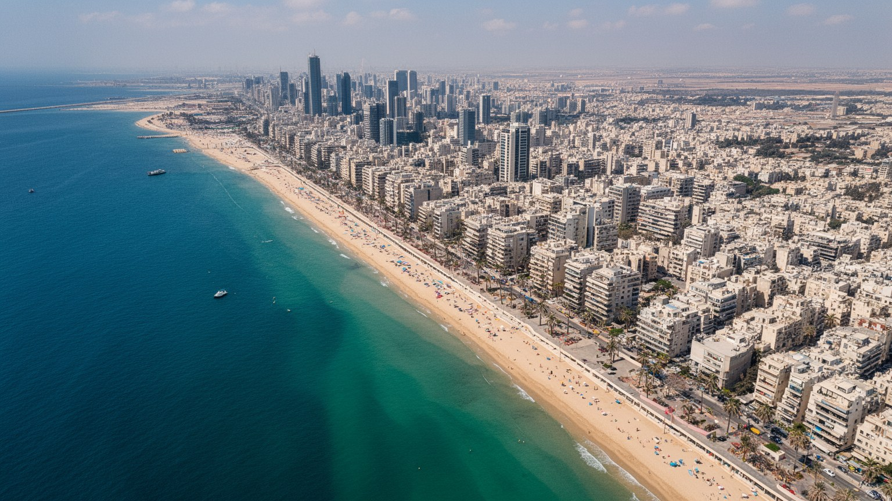
テルアビブの都市骨格は、地中海に沿う直線的な浜辺と、古い港町ヤッファから北へ伸びた近代市街でできています。海は観光の背景である前に、移民、貿易、軍事、休息の記憶を運ぶ都市の正面です。砂丘の上に計画された新しいユダヤ人都市は、港、鉄道、道路、郊外住宅地、大学、病院、軍関連施設へ広がり、現在はグシュ・ダン都市圏として周辺自治体と一体化しています。中心部だけを見ると歩ける海岸都市に見えますが、実際の生活は高速道路、郊外鉄道、バス、近年整備された軽軌道に強く依存します。住宅費が高いほど人は周辺都市へ移り、通勤時間が生活を決めます。海岸の開放感と内陸の交通渋滞を重ねて読むと、テルアビブはリゾートではなく、限られた平地に人口、資本、軍事的緊張、日常の余暇を押し込めた密度の高い都市圏として見えてきます。海辺の遊歩道では誰もが同じ景色を共有しますが、背後の街区に入ると所得、年齢、言語、宗教で生活圏が分かれます。地形は平坦でも、都市の使われ方にははっきりした段差があります。その段差を読むことが海岸都市の理解になります。さらに、海から内陸へ数本歩くだけで、観光の歩道、住宅の路地、幹線道路、建設現場が切り替わります。この近さが、休日の都市と労働の都市を同じ場所に重ねています。朝の通勤、昼の海水浴、夜の配送が同じ街路を使うため、時間帯ごとに都市の表情も変わります。
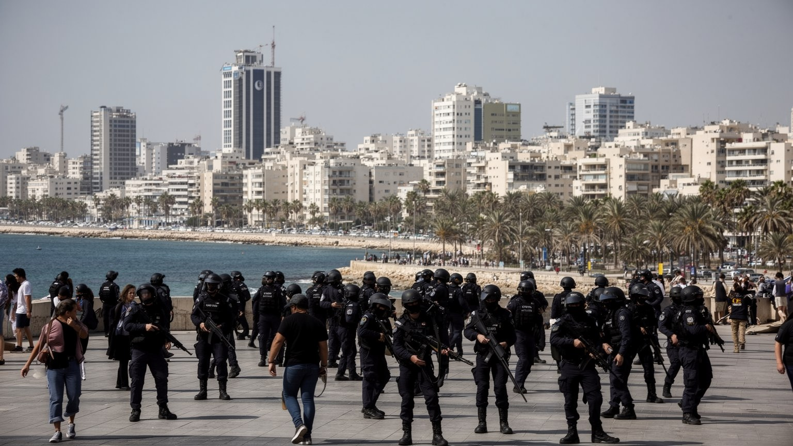
テルアビブは公式な政治首都として語られる都市ではありませんが、イスラエル国家の実務と国際接続を強く担います。企業本社、証券取引、報道機関、大学、病院、外交使節の一部、ベン・グリオン空港へのアクセスが近く、国内外の人と情報が集まります。安全保障は遠い政策ではなく、警備、避難室、空襲警報、兵役経験、空港検査、ニュース速報として生活に入り込みます。ガザ、レバノン、イラン、パレスチナ問題をめぐる緊張は、海辺のカフェやオフィス街の明るさと同時に存在します。開放的で世俗的な都市像は重要ですが、それだけではテルアビブを理解できません。都市は欧米と中東を結ぶ窓口である一方、地域紛争の当事者でもあります。地政学を読むには、外交的な位置だけでなく、住民が警報に反応し、家族の兵役を語り、政治的抗議に参加する日常まで見る必要があります。デモが広場を埋め、司法制度や戦争をめぐる議論がカフェの会話へ入り、海外との投資関係も政治リスクに揺れます。国家の緊張は境界線の外だけでなく、都市の予定、通勤、子どもの学校、週末の外出にも影を落とします。空港へ近いことも、便利さと警戒を同時に意味します。国際線の移動、家族の帰国、企業の出張は、常に安全確認と政治状況に左右されます。平時の明るい街路が、危機の時には情報確認と避難の場所へ変わる点に、この都市の緊張があります。
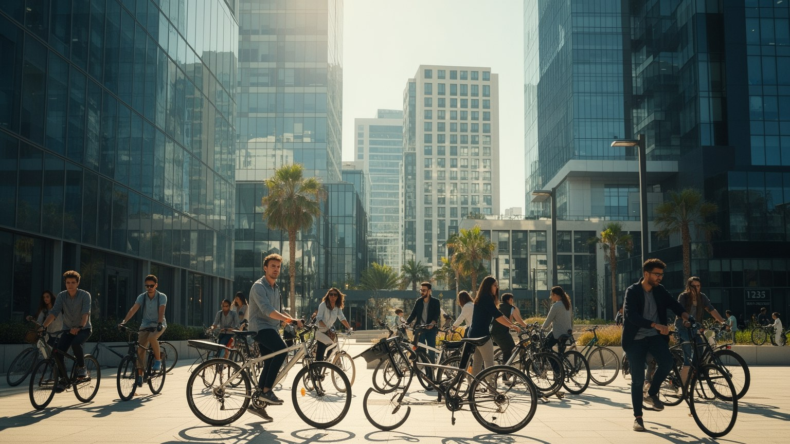
テルアビブ都市圏は、イスラエルのハイテク経済を象徴する場所です。サイバーセキュリティ、金融技術、医療技術、半導体、AI、軍民転用の技術、大学発の研究、ベンチャー投資が狭い地域に集まります。小さな国内市場、兵役で作られる人的ネットワーク、英語で資金を調達する企業文化、米国や欧州との接続が、創業を日常的な選択肢にします。しかし、この成功は都市全体を均等に豊かにするわけではありません。高賃金の技術職は住宅価格と飲食価格を押し上げ、清掃、介護、配送、警備、建設、厨房の労働者は中心に住みにくくなります。スタートアップの自由な雰囲気の背後には、長時間労働、軍事技術との距離、外国資本への依存、景気変動の脆さもあります。テルアビブの経済を読むとは、成功した企業の数だけでなく、その成功が誰の生活費を重くし、誰に機会を開き、誰を周辺へ押し出すのかを見ることです。大学、軍、投資家、海外市場が近いことは強みですが、同じ近さが閉じた人脈を作ることもあります。技能を持つ人には機会が多い一方、資格や言語を持たない人には家賃上昇だけが先に届きます。創業都市の評価には、下支えする労働の見え方が欠かせません。技術者の流動性は新しい企業を生みますが、生活基盤が弱い人には不安定さとして届きます。経済の速さが都市の包容力を追い越すと、成功の物語は一部の人だけのものになります。
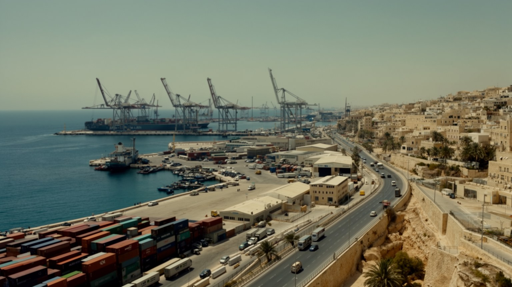
テルアビブを海辺の文化都市としてだけ見ると、港湾と物流の役割を見落とします。歴史的なヤッファ港は巡礼、交易、移民の入口であり、近代テルアビブの形成にも深く関わりました。現在の主要物流は周辺の港湾、空港、高速道路、倉庫、配送網へ分散していますが、都市圏の消費と産業はそれらなしに動きません。ベン・グリオン空港は観光客、出張者、移民、貨物を受け入れる国家の門であり、警備と国際接続の象徴でもあります。港町の古い石造りの路地、再開発されたウォーターフロント、郊外の物流施設、空港へ向かう道路を一緒に見ると、テルアビブは浜辺の余暇と硬いインフラが重なる都市だと分かります。飲食店の食材、建設資材、医療機器、技術企業の機材、観光客の移動は、見えにくい物流労働に支えられます。都市の軽やかなイメージは、重い物の移動と安全管理の上に成り立っています。物流は国境や港の政治とも結びつき、周辺地域の緊張が輸送費、保険、航空便、観光客の数へ波及します。倉庫で働く人、空港の検査員、夜間配送の運転手まで含めて見ると、国際都市の開放性は厳密な管理と不可分です。港と空港は自由な移動だけでなく、誰を通し、何を止めるかを決める場所でもあります。そのため物流を読むことは、都市の消費と国家の防衛を同時に読むことになります。海と空の回路が止まれば、観光だけでなく医療、食料、技術産業まで影響を受けます。
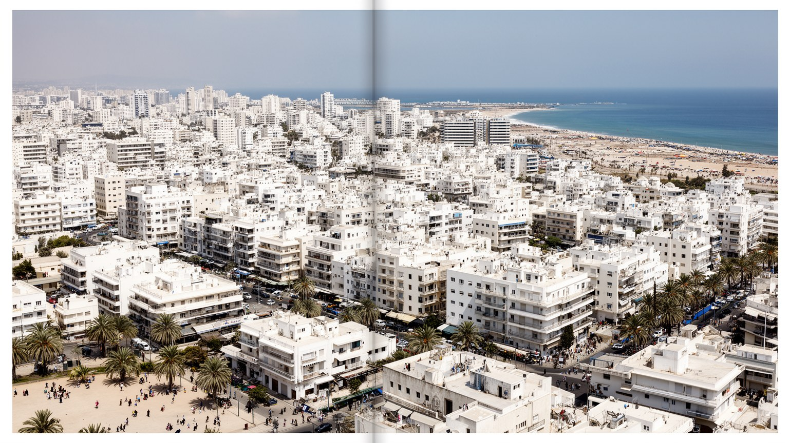
テルアビブの白い街は、バウハウスや国際様式の建築が集まる近代都市の記憶として知られます。白い壁、水平窓、ピロティ、日陰を作るバルコニーは、欧州から来た建築理念を地中海の気候へ合わせようとした試みでした。世界遺産として評価される一方、建物は博物館の展示物ではなく、人が住み、店が入り、修繕費と不動産価格にさらされる日常の器です。保存地区の価値が上がるほど、改修は進みますが、家賃も上がり、古い住民や小さな店が残りにくくなります。近代建築の白さは進歩と新国家の理想を語りますが、その背後には移民、土地取得、アラブ系住民との関係、都市の拡張の歴史があります。白い街を読むには、建物の美しさだけでなく、誰がそこに住み続けられるか、保存が生活を守るのか商品化するのかを考える必要があります。建築遺産は都市の誇りであると同時に、住宅問題を映す表面でもあります。さらに、保存された街並みの周囲では高層化が進み、古い低層建築との対比が強まります。耐震補強、断熱、エレベーター、日陰の確保は、遺産を現在の住まいとして使うための現実的な課題です。建築を眺めるだけでは、住む人の維持費や老朽化の不安は見えません。保存の成功は、観光価値だけでなく、日常の住み心地を保てるかで測られます。白い外壁の背後にある修繕、家賃、相続、近隣関係まで含めて建築遺産です。
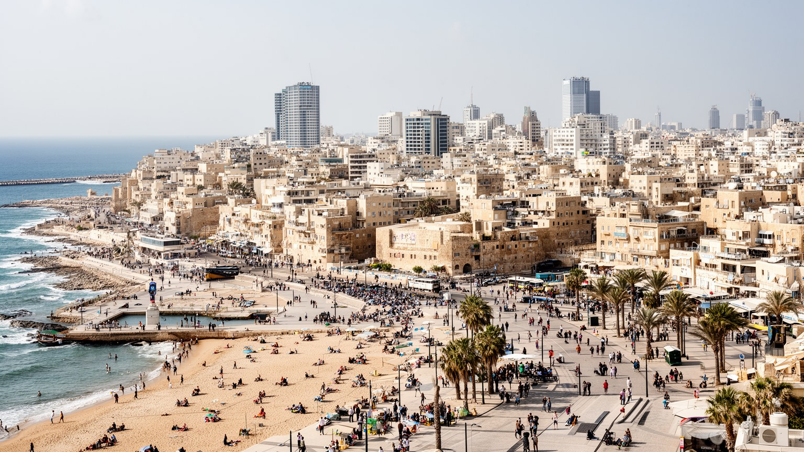
ヤッファはテルアビブの古い港であり、アラブ系住民、ユダヤ系住民、観光客、芸術家、不動産投資が重なる複雑な地区です。旧市街の石造りの景観は絵葉書のように見えますが、そこにはパレスチナ人住民の記憶、1948年前後の離散、港湾労働、宗教施設、市場の生活が残ります。再開発と観光化は建物を修復し、飲食店やギャラリーを増やしますが、同時に家賃上昇と立ち退きの不安を強めます。混住都市という言葉は美しく聞こえますが、行政サービス、学校、治安、土地所有、言語、政治的帰属をめぐる不均衡を隠すこともあります。ヤッファを読むことは、テルアビブの自由で明るい都市像に、港町の歴史とパレスチナ人の生活を重ねることです。市場で買い物をする人、教会やモスクへ向かう人、海を見に来る観光客、再開発物件を買う投資家は同じ路地を使いますが、都市への権利は同じではありません。その差を見ずに景観だけを楽しむと、都市の核心を取り逃がします。学校で使われる言語、警察への信頼、公共住宅の扱い、商店街の客層は、共存がどの程度実質を持つかを示します。港町のロマンは、住民の権利や記憶の継承と切り離せません。ヤッファは美しい入口であると同時に、都市の不均衡を最も鋭く映す場所です。観光客が歩く美しい坂道は、住民にとって通学路であり、生活の記憶を守る場所でもあります。歴史地区を守ることは、石を残すだけでなく、住民が語る言葉と店の習慣を残すことでもあります。
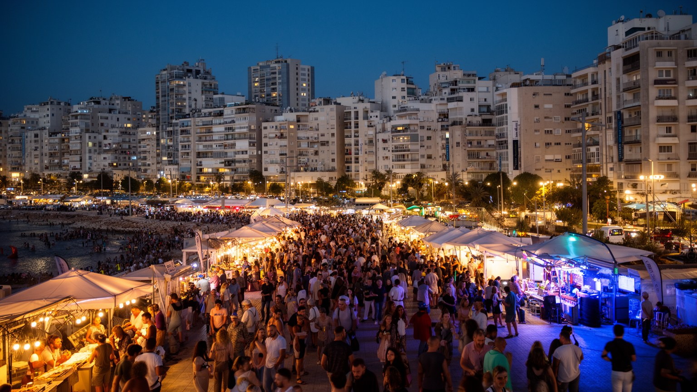
テルアビブの文化は、浜辺、カフェ、クラブ、現代美術、映画、デザイン、料理、LGBTQコミュニティ、抗議の広場が近い距離で重なります。エルサレムが宗教と国家の象徴性を強く持つのに対し、テルアビブは世俗的で個人の自由を前面に出す都市として語られます。夜遅くまで開く飲食店、犬を連れた散歩、海岸の運動、週末の市場は、都市の開放感を作ります。ただし、自由な雰囲気は誰にでも同じではありません。宗教的な住民、低所得者、移民労働者、アラブ系住民、難民申請者にとって、中心部の消費文化は距離を感じさせることがあります。文化産業も、音楽家、店員、警備、清掃、配達、映像制作の労働に支えられます。テルアビブの魅力は、規範から少し外れて生きられる余白にありますが、その余白を保つには、家賃、差別、治安、政治的分断を無視できません。楽しい夜の街は、社会の緊張を消すのではなく、別の光で照らします。祭りやパレードが都市の寛容さを示す一方、国全体の保守的な価値観や安全保障の緊張とも衝突します。文化の自由は自然に存在するものではなく、公共空間、法制度、地域の合意、働く人の生活条件によって支えられます。その条件を読むと、夜の明るさの奥行きが見えてきます。自由を祝う空間ほど、誰が参加しにくいのかを見落とさない視点が必要です。音楽や食の楽しさは、政治的対立や生活費の重さを消すのではなく、都市が抱える矛盾の中で続いています。
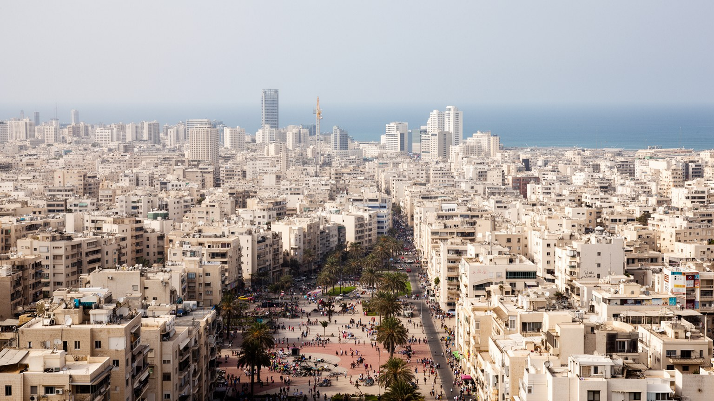
テルアビブの日常は、海辺の散歩やカフェの明るさだけでは測れません。住宅費はイスラエルの中でも重く、若い専門職、学生、家族、移民労働者は中心に住むために小さな部屋、高い家賃、共同生活、長い通勤を受け入れます。子育て世帯には保育、学校、交通、駐車、暑さが負担になり、高齢者にはエレベーターのない古い建物、医療への移動、孤立が問題になります。安息日の交通制限や店の営業、宗教的習慣と世俗的な生活の差も、都市の使い方を分けます。海岸や公園は重要な公共空間ですが、そこへ近く住める人は限られます。技術産業の賃金が上がるほど、飲食店や清掃、介護で働く人は周辺へ押し出され、都市の便利さを支える人が都市を使いにくくなります。テルアビブの暮らしを読むには、ビーチの解放感と家賃通知、夜の楽しさと翌朝の通勤、自由な都市像と生活費の現実を同じ地図に置く必要があります。公共交通の改善は進んでも、自動車依存や渋滞は残り、安息日の移動をどう支えるかも政治的な論点になります。生活の質は、店の多さだけでなく、暑い日に歩ける歩道、子どもが遊べる場所、家賃を払った後に残る余裕で決まります。日常の評価には、観光客の快適さとは別の物差しが必要です。海辺の都市らしさは、家を失わずにその海を使える住民がいて初めて続きます。住まい、交通、保育、医療がそろわなければ、都市の自由は長く暮らせる条件になりません。
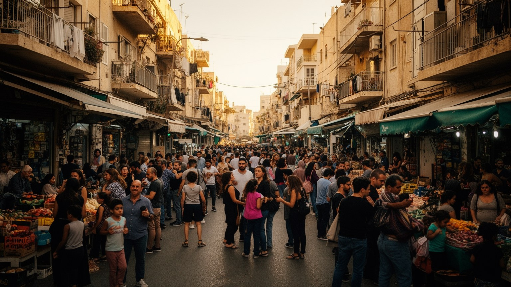
テルアビブはユダヤ移民によって作られた都市であると同時に、現在も多様な移住者を抱えます。旧ソ連圏、エチオピア、欧米、アジア、アフリカから来た人びと、外国人介護労働者、建設労働者、難民申請者、留学生が都市の人手と文化を支えます。移民の経験は一様ではありません。市民権、宗教的帰属、肌の色、言語、在留資格、職種によって、住める場所、受けられる医療、警察との距離、学校での扱いが変わります。南テルアビブでは貧困、過密、治安不安、行政支援の不足、難民申請者への反発が重なり、都市の開放的なイメージとは違う現実が見えます。移民は経済の労働力であるだけでなく、食、音楽、宗教、家族の形を都市へ持ち込みます。テルアビブを理解するには、成功した創業都市としての顔と、権利が不安定な人びとが支える生活都市としての顔を同時に読む必要があります。社会問題は周縁にあるのではなく、都市の中心的な便利さの条件です。介護や建設の仕事は家庭生活と都市更新を支えますが、働く人の住居、休暇、医療、法的保護は不安定になりがちです。学校や地域団体が言語支援を担う場面も多く、都市の包容力は行政だけでなく近隣の対応にも左右されます。多様性を語るなら、権利の差まで見る必要があります。見えにくい人ほど、都市の基礎を支える仕事に就いていることが多いのです。移民の生活を周縁の問題として扱うほど、都市は自分を支える労働を見失います。
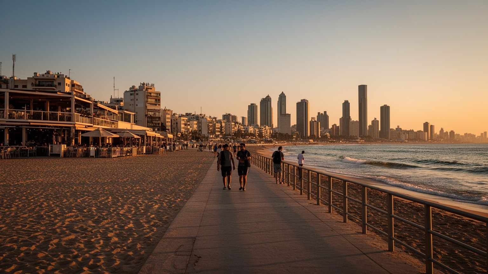
テルアビブ観光は、長いビーチ、白い街、ロスチャイルド大通り、カルメル市場、ナハラット・ビンヤミン、テルアビブ美術館、ヤッファの旧市街、夜の飲食街を短い距離で結びます。観光客にとっては、宗教的聖地が集中するエルサレムとは違う、現代的で海に開いたイスラエルの入口になります。食の魅力も大きく、ユダヤ系移民、アラブ系、地中海、北アフリカ、中東、欧州の味が市場やレストランに重なります。しかし観光は中立の消費ではありません。安全情勢で客足は大きく変わり、宿泊価格や短期賃貸は住民の住宅費に影響します。ヤッファの景観や市場が観光商品になるほど、住民の日用品店や生活のリズムが変わることもあります。テルアビブを訪れることは、ビーチで休むことだけでなく、地域の緊張、労働、歴史、住宅問題の上に観光が成り立つことを意識する行為です。海辺の開放感は都市の魅力ですが、その背景を読んでこそ旅は深くなります。ホテル、飲食、清掃、警備、ガイド、交通の仕事は観光を支えますが、繁忙期の長時間労働や物価上昇も生みます。写真に収まる明るい海岸の外側で、住民は買い物、通学、通勤を続けています。観光の成功は、訪れる人の満足と住む人の使いやすさを両立できるかで決まります。旅の快さは、生活の場所を借りているという感覚と合わせて考える必要があります。市場での買い物や浜辺の休息も、住民の通路と労働時間の上に成り立ちます。
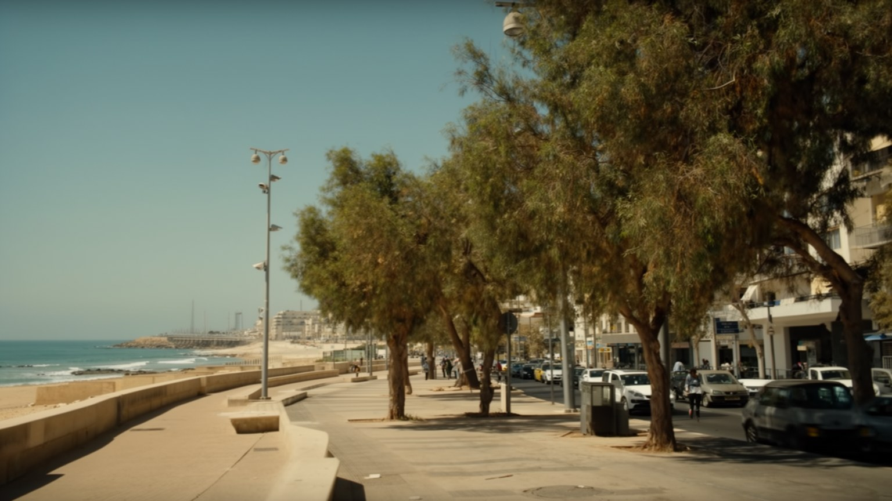
テルアビブの地中海性気候は、乾いた長い夏と雨の冬を持ちます。海風は暑さを和らげますが、気候変動で熱波、水不足、強い雨、海岸侵食、都市の排水負荷がより重要になります。白い建物と街路樹は見た目の要素であるだけでなく、日差しを逃がし、歩ける都市を保つための環境装置です。高層化と再開発が進むほど、日陰、風の通り道、公共の水飲み場、涼める場所、公園の分布が生活の公平性を左右します。暑さの影響は均等ではありません。屋外で働く人、高齢者、エアコン代を抑える世帯、古い住宅に住む人、バス停で待つ人ほど負担が大きくなります。海岸は観光と休息の場所ですが、砂浜の維持、汚水処理、嵐への備えも必要です。テルアビブの環境を読むことは、青い海の美しさだけでなく、暑さと水を誰が負担し、都市がどこまで公共空間として涼しさを配れるかを見ることです。気候適応は、将来の課題ではなく毎日の歩きやすさそのものです。雨の少ない都市では水の供給と節約も政治的な意味を持ち、地域全体の資源配分と結びつきます。再開発で緑地が不足すれば、暑さは低所得地区ほど厳しくなります。環境政策は景観整備ではなく、健康と公平性を守る都市政策です。涼しさを買える人だけに頼らない設計が、暑い都市の公共性になります。海風、木陰、公共交通、住宅断熱をつなげて初めて、気候への備えは日常の安心になります。
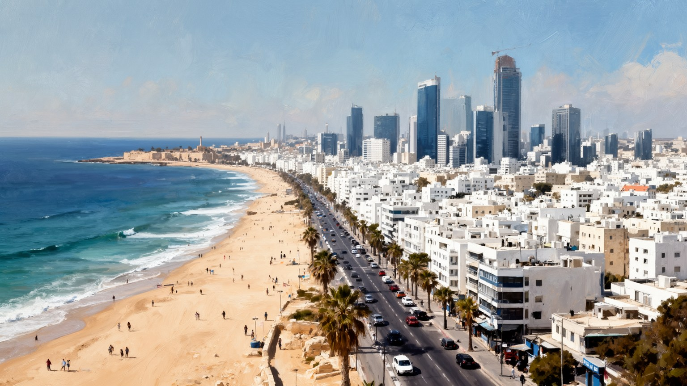
テルアビブは、世界都市としての重要性を人口規模だけで説明できない都市です。地中海の浜辺、白い近代建築、ヤッファの港町、ハイテク企業、空港、大学、軍事的緊張、移民の労働、LGBTQ文化、世俗的な夜の生活が、狭い都市圏に重なります。明るく自由なイメージは本物ですが、その背景には住宅費、兵役、安全保障、パレスチナ問題、アラブ系住民との関係、難民申請者の不安定な生活があります。エルサレムが聖地と国家の象徴を集めるのに対し、テルアビブは経済、文化、日常の速度を通じてイスラエル社会の別の顔を見せます。都市を読むには、ビーチと起業、夜の楽しさと警報、保存建築と立ち退き、観光と港町の記憶を切り離さないことが必要です。テルアビブの強さは、世界へ開く接続と生活の軽やかさにあります。弱さは、その軽やかさを支える人や周縁化された住民の権利が見えにくくなる点にあります。明るさと緊張を同じ地図で読むと、この都市は中東の現代を考える重要な入口になります。都市の価値は、自由な空気や投資額だけでは測れません。誰が海に近く住めるのか、誰が夜の街を支え、誰が警報や政治の影響を強く受けるのかを見て初めて、テルアビブの複雑さが立ち上がります。軽やかに見える都市ほど、その足元の制度と記憶を丁寧に読む必要があります。その視点が要ります。